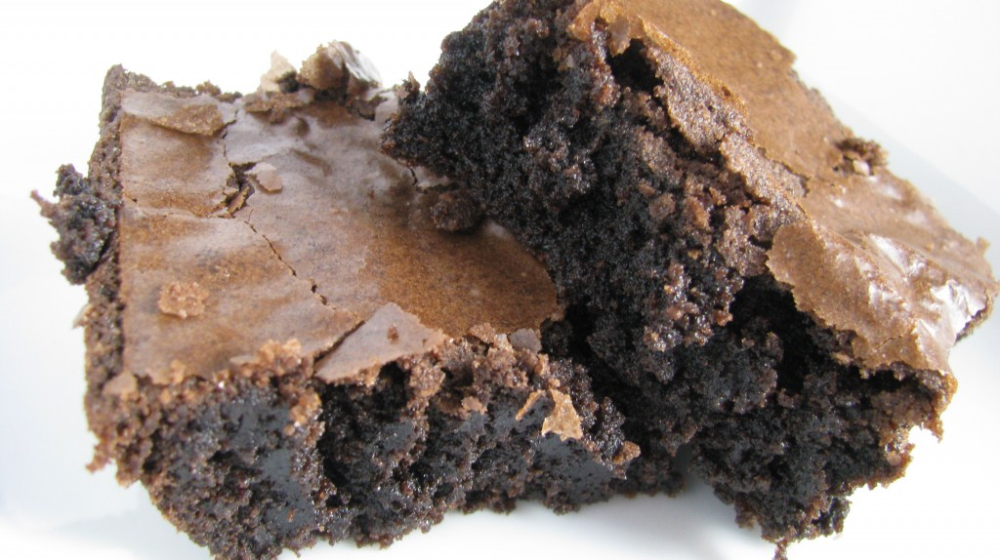

Overloaded Brownies

Description
These decadent chocolate brownies are rich, fudgy, and absolutely
irresistible. Perfect for satisfying your sweet tooth, they are easy to
make and sure to become a family favorite. Whether you're serving them at
a party, bringing them to a potluck, or just enjoying them as a treat at
home, these brownies are bound to impress.
Ingredients
- 226 grams unsalted butter, melted
- 200 grams granulated sugar
- 220 grams packed light brown sugar
- 4 large eggs
- 125 grams all-purpose flour
- 85 grams unsweetened cocoa powder
- 1/2 teaspoon salt
- 175 grams semi-sweet chocolate chips
Steps
-
Preheat your oven to 350°F (175°C) and line a 9x13-inch baking pan with
parchment paper or lightly grease it.
-
Combine the melted butter, granulated sugar, and brown sugar in a large
bowl, whisking until smooth.
-
Add the eggs and vanilla extract to the mixture, beating until fully
incorporated.
-
Sift together the flour, cocoa powder, and salt in a separate bowl.
Gradually add this dry mixture to the wet ingredients, stirring until
just combined.
-
Fold in the chocolate chips, ensuring they are evenly distributed
throughout the batter.
-
Pour the batter into the prepared baking pan and spread it evenly with a
spatula.
-
Bake for 25-30 minutes, or until a toothpick inserted into the center
comes out with only a few moist crumbs attached. Be careful not to
overbake, as this will result in drier brownies.
-
Allow the brownies to cool completely in the pan before cutting them
into squares.
-
Enjoy! Serve with a scoop of vanilla ice cream or a glass of cold milk
for an extra special treat.